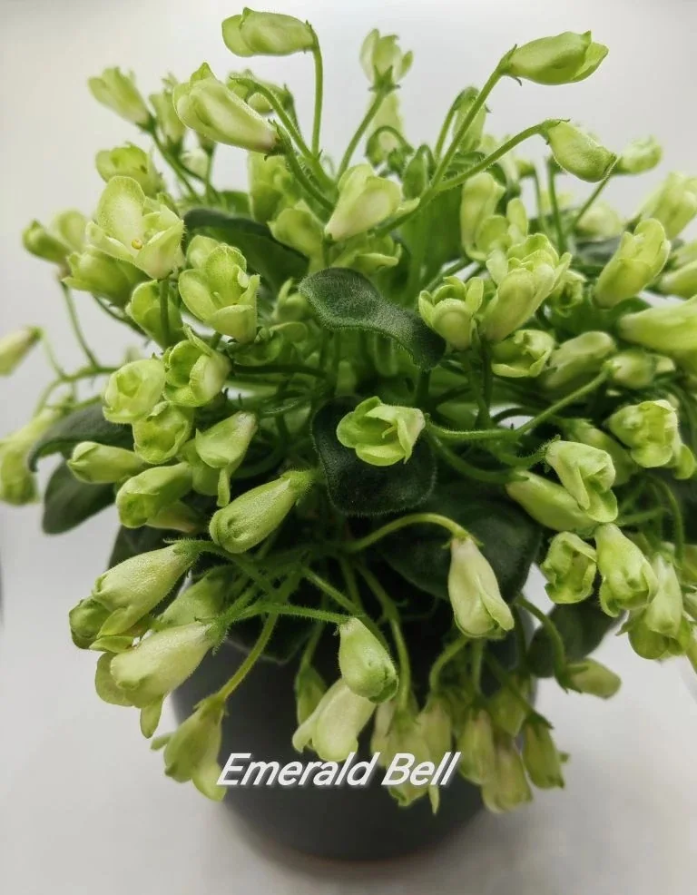

← Вернуться в коллекцию

ЛИЧНАЯ КОЛЛЕКЦИЯ
Emerald Bell
Emerald Bell (изумрудный колокольчик). Вот такое необычное цветение. Эти шишечки до конца не распускаются. В этом её особенное очарование. Покоряет своей способностью обильно цвести месяцами, без перерыва. Миниатюра.
Фотография взрослой розетки из коллекции Натальи Тыриной. Возможность заказа листовых черенков, деток и стартёров уточняйте лично.